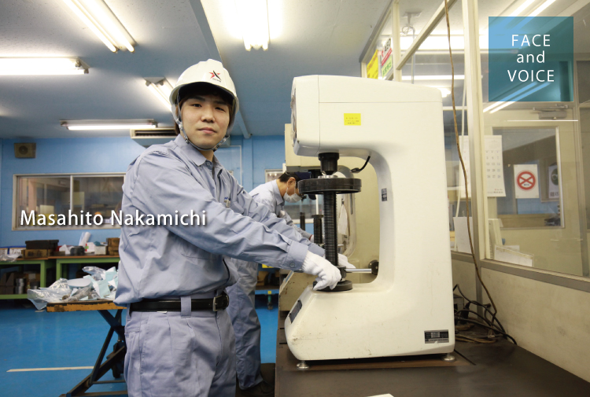
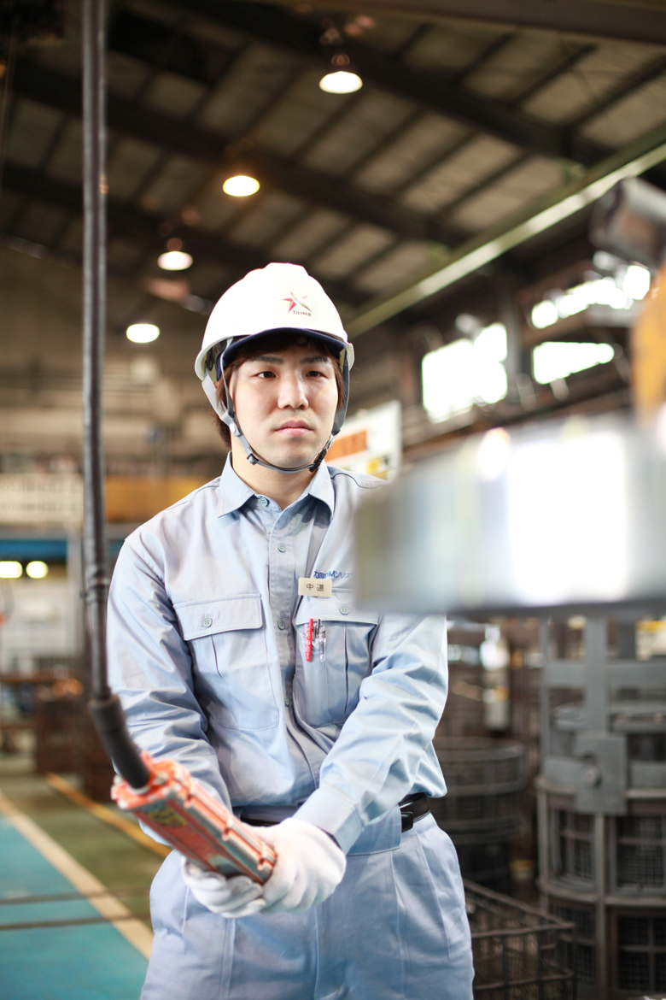

生産本部
大阪熱処理工場 製造室
中道 政仁

目には見えない熱処理作業の面白さ
入社前に訪れた工場見学で、作業員の皆さんが和気あいあいとした雰囲気で働いている姿に好印象を抱きました。そこからホームページ等で情報収集し、特に熱処理業務を希望して入社しました。熱処理という仕事の面白いところは、目に見えない作業を行っているという点です。精密加工などのように加工する工程が目に見えるものとは違い、熱を加えて鋼が真っ赤になっている中で、組織の粒子を動かすという目に見えないレベルの作業を行い、鋼の性質をコントロールしていく。そこに非常に面白さを感じています。
私が担当しているのは、熱処理の中でも"焼き戻し"という工程です。鋼を硬質化し、強度を高める"焼き入れ"は、いわば素材に命を吹き込む工程。そして、そのあとに行う"焼き戻し"は、命を宿した鋼をよりお客様のニーズにあった性質になるよう調整していく工程で、製品の硬さ、靭性、残留応力の除去を目的として行う処理です。熱処理後には、どのくらいの温度で処理すると製品にどのような影響を与えるかを分析しますが、現状収集されているデータにはまだ多少のあいまいさがあるため、実際の熱処理工程では作業する職人の経験値に頼る面もあります。ゆくゆくはすべての鋼材、材質について、熱処理の適切な温度条件やその影響などを厳密にデータ化し、職人技に頼ることなく均一に高度な製品品質が得られるよう作業のマニュアル化を図っていきたいと考え、データ収集を進めています。
どんな小さな改善も、まずはやってみる
職場の雰囲気は入社前の工場見学の時に感じた通り、あたたかく上司部下に関係なく会話ができる風通しのよい職場です。現場の改善提案についても上司に相談しやすく、提案内容がよければ取り入れてくれますし、改善に協力してもらえることも多い環境です。自分一人の判断では決定できないことも、工場長や室長に相談しながら実践してみる。失敗してもそのあとの改善策は必ず出てくるものです。現場では『どんな小さなことでも改善すれば、またその上に改善策がある』とよく言われ、まずはどんな小さなことでもやるということが一番大事なんだと上司や先輩たちから学びました。
熱処理というプロセスは、表に出ない作業なので一般の方にはなじみのない言葉だと思いますが、皆さんの普段の生活を陰で支えているとても需要のある仕事です。自動車にしてもその部品は必ず熱処理を行っていますし、目に見えない仕事ではありますが陰で私たちの生活を支え、ものづくりの根幹を支える仕事。ですから、ものづくりに興味がある方は、そうしたものづくりの現場である当社の工場をぜひ一度見てもらいたいなと思います。